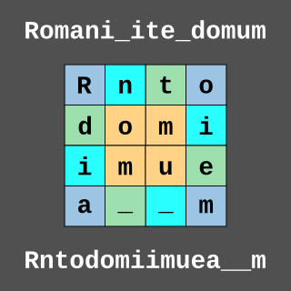

Interlaced Spiral Cipher
Points: 5 kyu
Kata ID: 5a24a35a837545ab04001614

In this kata, your task is to implement what I call Interlaced Spiral Cipher (ISC).
Encoding a string using ISC is achieved with the following steps:
- Form a square large enough to fit all the string characters
- Starting with the top-left corner, place string characters in the corner cells moving in a clockwise direction
- After the first cycle is complete, continue placing characters in the cells following the last one in its respective row/column
- When the outer cells are filled, repeat steps
2through4for the remaining inner squares (refer to the example below for further clarification) - Fill up any unused cells with a space character and return the rows joined together.
Input
A string comprised of any combination of alphabetic characters, the space character, and any of the following characters _!@#$%^&()[]{}+-*/="'<>,.?:;.
Arguments passed to the encode method will never have any trailing spaces.
Output
The encode method should return the encoded message as a string
The decode method should return the decoded message as a string with no trailing spaces
Test Examples
let phrase1 = `Romani ite domum`;
InterlacedSpiralCipher.encode(phrase1); // `Rntodomiimuea m`
let phrase2 = `Stsgiriuar i ninmd l otac`;
InterlacedSpiralCipher.decode(phrase2); // `Sic transit gloria mundi`
/* Encoding sequence for a 5 x 5 square:
[ 1 5 9 13 2]
[16 17 21 18 6]
[12 24 25 22 10]
[ 8 20 23 19 14]
[ 4 15 11 7 3]
*/
Technical Details
- Input will always be valid.
If you enjoyed this kata, be sure to check out my other katas.